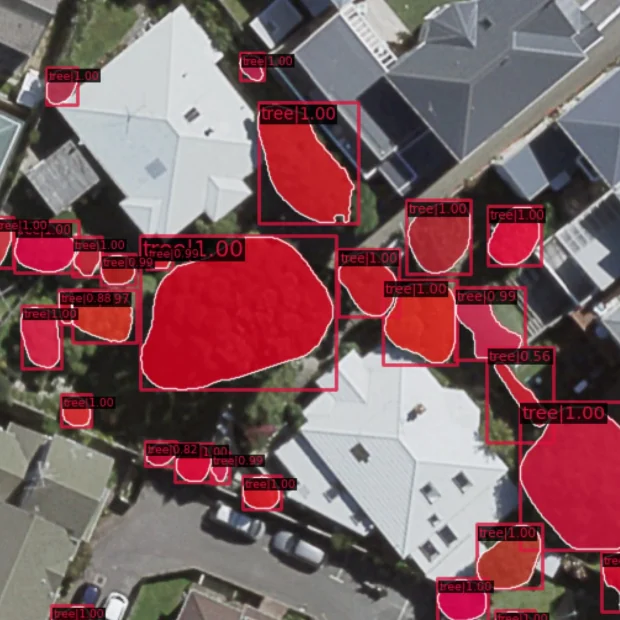
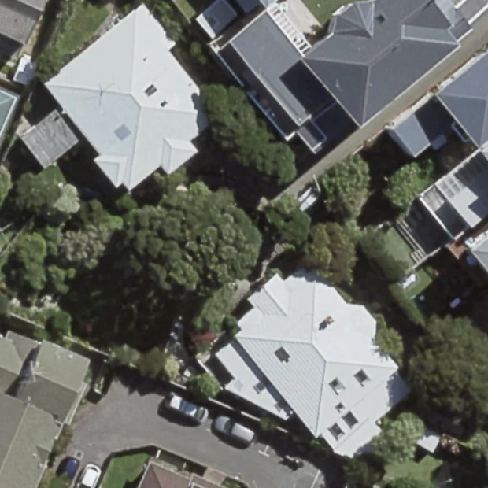
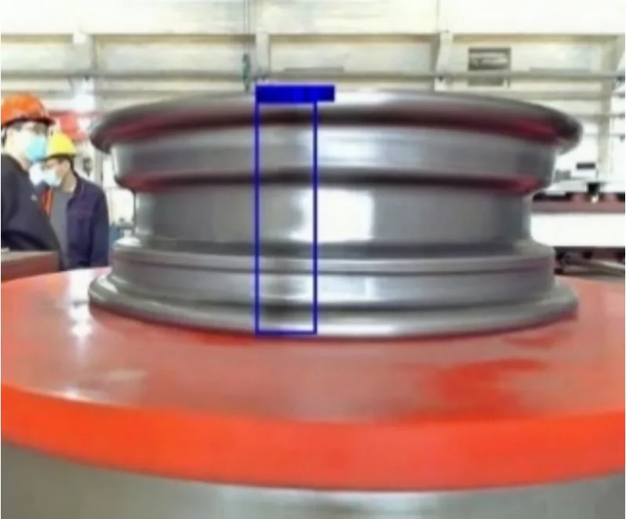
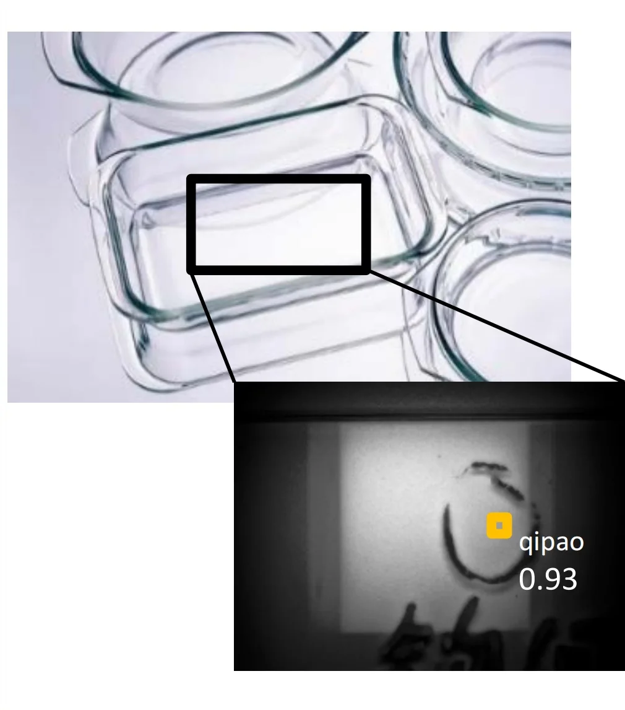
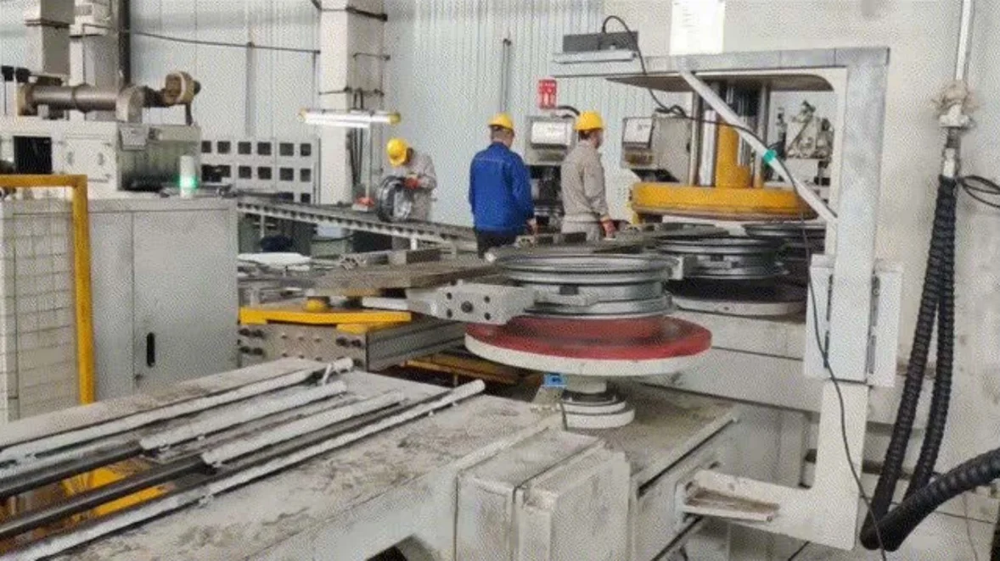
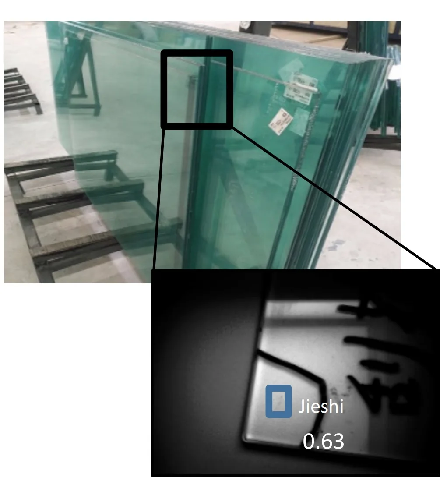

Dynamic forest mapping
Predicting canopy height from aerial imagery, trained and validated against LiDAR, so forest structure can be mapped wherever LiDAR doesn’t reach.
Part of a New Zealand–NASA research partnership with NASA Earth Exchange
I’m an Applied AI Scientist with a PhD and industry experience. I build practical, reliable AI solutions, from early prototypes to real-world deployment.
NowData Scientist at Dragonfly Data Science

An assistant that answers from my CV, projects and publications. It’s quicker than reading everything — but answers can be imperfect, so follow the source links.
Prepared answers from Zoey’s profile and publications.
Predicting canopy height from aerial imagery, trained and validated against LiDAR, so forest structure can be mapped wherever LiDAR doesn’t reach.
Part of a New Zealand–NASA research partnership with NASA Earth Exchange


Input PredictionNew YOLO and Mask R-CNN variants that detect and outline individual tree crowns in aerial imagery — even where canopies overlap. Drag the image to compare input and prediction.
+10% detection and +8% segmentation accuracy · six papers
Retrieval-augmented assistants that help New Zealanders find government services and policy in plain language, and explore research from New Zealand institutions.
Structured testing of chatbot answers, plus n8n workflows that draft proposals with AI and route every draft through human review before it’s sent.


Weld seam Glass flawYOLO detectors that locate weld seams on wheel hubs and find flaws in glass — taken from raw factory images to client deployment.
99.98% detection · under 0.3 cm positioning error

Attention-based and CycleGAN methods that recover colour, contrast and fine texture from a single hazy photograph.
Published in ACM TOMM and Computer Vision and Image Understanding
Nov 2025 — PresentWellington
Dragonfly Data Science
Machine learning for forest mapping from aerial imagery and LiDAR, as part of a New Zealand–NASA research partnership.
Aug — Oct 2025Auckland
ElementX
Chatbot backends, structured LLM response evaluation and n8n document automation.
Mar — Aug 2025Wellington
Victoria University of Wellington
Extended my tree-crown instance segmentation research with Manaaki Whenua – Landcare Research.
Oct 2024 — Mar 2025Wellington
Callaghan Innovation
Improved RAG and semantic retrieval for the GovGPT and PaperBoi assistants.
Oct 2021 — Feb 2025Wellington
Victoria University of Wellington
Detection and instance segmentation of tree crowns in aerial imagery, with large-scale data pipelines and multi-GPU training.
Published as Ziyi Sun. Most of my work asks how to make detection and segmentation models hold up on messy, real-world imagery.
IEEE Transactions on Emerging Topics in Computational Intelligence 10(1), 51–65 · early access 2025
PRICAI 2025: Trends in Artificial Intelligence LNCS 16455, 298–314 · Springer
IEEE Journal of Selected Topics in Applied Earth Observations and Remote Sensing 18, 14752–14765
Journal of the Royal Society of New Zealand 55(6), 1854–1879
ISPRS Open Journal of Photogrammetry and Remote Sensing 17, 100095
38th International Conference on Image and Vision Computing New Zealand (IVCNZ) 1–6
ACM Transactions on Multimedia Computing, Communications, and Applications 18(2), article 58, 1–23
Computer Vision and Image Understanding 203, 103133
Victoria University of Wellington
Shandong University of Finance and Economics
Shandong University of Finance and Economics
Current work · Dragonfly Data Science · Nov 2025 – now
LiDAR measures forest structure in remarkable detail, but it only covers part of New Zealand and is expensive to repeat. Aerial imagery is far more widely available. This project trains models where both exist, then predicts synthetic canopy height models (synCHMs) where LiDAR is missing.
At Dragonfly Data Science I work on the MBIE-funded Catalyst: Strategic project Integrating machine learning and remote sensing for dynamic forest mapping, a partnership with NASA Earth Exchange (NEX). The wider aim is a regularly updated picture of New Zealand’s forests — combining structural maps with satellite time series to follow growth and disturbance — for forest management, conservation and carbon assessment.
Doctoral research · Victoria University of Wellington · 2021 – 2025
Tree crowns are a hard test for instance segmentation: they overlap, vary hugely in size, and blend into lawns, shadows and each other. My PhD developed detection and segmentation models that pick out each crown individually in aerial imagery.
The research was a collaboration with Manaaki Whenua – Landcare Research, supervised by Mengjie Zhang and Bing Xue. I continued it as a research assistant in 2025.
Conversational AI · Callaghan Innovation · Oct 2024 – Mar 2025
Two conversational AI projects with one goal: make specialised information easy to ask about. GovGPT gives New Zealanders a plain-language way into government services and policy; PaperBoi supports discovery and knowledge transfer from research published by New Zealand institutions.
AI workflows · ElementX · Aug – Oct 2025
At ElementX I worked across agentic AI projects: the backend of a chatbot, structured evaluation of what the model actually says, and automation that turns AI drafts into reviewed, delivered documents.
Applied computer vision · China · 2020 – 2021
Before my PhD I worked on two applied computer-vision systems, taking each from raw factory images to working deployments.

With FAW and China National Heavy Duty Truck Group, I worked on data collection, cleaning and labelling, and developed YOLO models to detect and locate weld seams on wheel hubs. I supported real-world deployment and client demonstrations.

I built the dataset and computer-vision pipeline — collection, image processing, labelling and YOLO model development — for automated glass-defect detection, then presented the results to the client and supported integration into practical use.
Image restoration · Master’s research · 2018 – 2021
Haze scatters light, washing out colour, contrast and detail. My master’s research at Shandong University of Finance and Economics asked how deep learning can recover a clear image from a single hazy photograph — when perfectly paired training data are hard to come by.